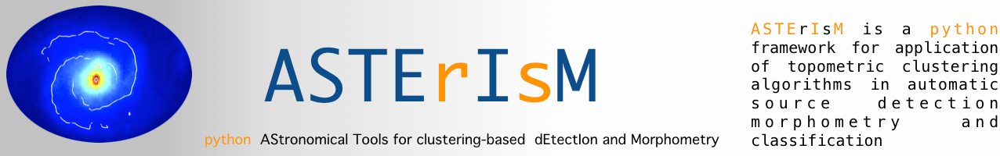

| Author: | Andrea Tramacere |
|---|
What is ASTErIsM¶
ASTErIsM is a ptyhon-based framework for detection of astronomical sources, and extraction of morphometric features. The detection and features extraction are based mainly on density clustering algorithms (DBSCAN and DENCLUE). ASTErIsM also offers tools for machine learning supervised classification, based on the scikit-learn framework. The kernel computation in the DENCLUE algorithm has been written in Cython to speed up the computational time. Both the DBSCAN and DENCLUE algorithms have been modified in order to work with digital images. Some image processing tasks are performed using the ndimage package from the scipy, and the scikit-image framework. ASTErIsM implements also the possibility to design flexible user-oriented pipelines, by the use of its pipeline manager sub-package, that allows to combine together different task, with the possibility to configure parameters through configuration files